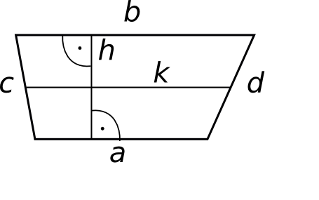

Trapets on nelinurk, mille kaks külge on omavahel parallelsed ja kaks ülejäänud
külge ei ole omavahel paralleelsed. Paralleelseid külgi nimetatakse trapetsi
alusteks. Trapetsi kõrgus on aluste vaheline kaugus. Trapetsi kesklõiguks
nimetatakse haarade keskpunkte ühendavat lõiku. Kesklõik on joonisel tähistatud
tähega k.
Trapetsi omadusi: